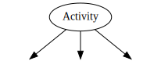

In Odoo, a workflow is a technical artefact to manage a set of "things to do" associated to the records of a model. The workflow provides a higher-level way to organize tasks to perform with or on a record.
More specifically, a workflow is a directed graph where the nodes are called "activities" and the arcs are called "transitions".
活动定义应该在Odoo服务器内进行，比如改变一些记录状态，或发送电子邮件的工作。
转换控制工作流程，从活动如何进展到活动。
In the definition of a workflow, one can attach conditions, signals, and triggers to transitions, so that the behavior of the workflow depends on user actions (such as clicking on a button), changes to records, or arbitrary Python code.
All in all, Odoo's workflow system provides:
- a description of the evolution of a record (document) over time
基于各种灵活的条件自动操作
公司的角色和验证步骤的管理
管理对象之间的交互
文件的可视化表示流经它们的生命周期
For instance, a basic order could have the following flow:

Orders start in the Draft state, can be Confirmed by a user, and then either shipped (Closed) or Canceled.
A company using Odoo may want to add discount support to orders, where sales staff has discretionary discounting powers up to 15%, but manager validation is required for discounts beyond 15%. The workflow can be altered online to add the relevant steps without editing Python or XML files:

Because Activities can perform arbitrary actions, the Validation can automatically send a validation request to the relevant employee.
注解
the order view needs to be modified to add an Accept Discount button for managers
基础知识
Defining a workflow with data files is straightforward: a record "workflow" is given together with records for the activities and the transitions. For instance, here is a simple sequence of two activities defined in XML
<record id="test_workflow" model="workflow">
<field name="name">test.workflow</field>
<field name="osv">test.workflow.model</field>
<field name="on_create">True</field>
</record>
<record id="activity_a" model="workflow.activity">
<field name="wkf_id" ref="test_workflow"/>
<field name="flow_start">True</field>
<field name="name">a</field>
<field name="kind">function</field>
<field name="action">print_a()</field>
</record>
<record id="activity_b" model="workflow.activity">
<field name="wkf_id" ref="test_workflow"/>
<field name="flow_stop">True</field>
<field name="name">b</field>
<field name="kind">function</field>
<field name="action">print_b()</field>
</record>
<record id="trans_a_b" model="workflow.transition">
<field name="act_from" ref="activity_a"/>
<field name="act_to" ref="activity_b"/>
<field name="signal">signal_goto_b</signal>
</record>
A worfklow is always defined with respect to a particular model (the model is
given by the attribute osv on the model workflow). Methods specified
in the activities or transitions will be called on that model.
In the example code above, a workflow called "test_workflow" is created. It is made up of two activies, named "a" and "b", and one transition, going from "a" to "b".
The first activity has its attribute flow_start set to True so that
Odoo knows where to start the workflow traversal after it is instanciated.
Because on_create is set to True on the workflow record, the workflow is
instanciated for each newly created record. (Otherwise, the workflow should be
instanciated by other means, such as from some module Python code.)
When the workflow is instanciated, it begins with activity "a". That activity
is of kind function, which means that the action print_a() is a method
call on the model test.workflow (the usual cr, uid, ids, context
arguments are passed for you).
The transition between "a" and "b" specify a signal but not any condition. This
means the workflow instance will immediately transition from "a" to "b" when the
signal signal_goto_b is recieved and thus processes activity "b"'s action
print_b().
活动
虽然转换可以看作是工作流的控制结构，活动是在那里发生的一切，更改记录状态，以发送电子邮件。
Different kinds of activities exist: Dummy, Function, Subflow, and
Stop all, each doing different things when the activity is processed. In
addition to their kind, activies have other properties, detailed in the next
sections.
流程启动和流程停止
属性``flow_start``是一个布尔值，指明是否当工作流实例化活动进行处理。多活动可以有自己的属性``flow_start``设置值为``True``。当为记录instanciating工作流程，Odoo只是处理所有这些，并评估所有的输出转移之后。
属性``flow_stop``是一个布尔值，指定活动是否停止工作流实例。工作流实例被认为是当所有的活动属性``flow_stop``设置值为``True``完成完成。
It is important for Odoo to know when a workflow instance is completed. A workflow can have an activity that is actually another workflow (called a subflow); that activity is completed when the subflow is completed.
子流程
An activity can embed a complete workflow, called a subflow (the embedding
workflow is called the parent workflow). The workflow to instanciate is
specified by attribute subflow_id.
注解
在GUI中，该属性不能被设置，除非那种活性是``Subflow``。
The activity is considered completed (and its outgoing transitions ready to be
evaluated) when the subflow is completed (see attribute flow_stop above).
从子流程发送信号
When a workflow is embedded in an activity (as a subflow) of a workflow, the
sublow can send a signal from its own activities to the parent workflow by
giving a signal name in the attribute signal_send. Odoo processes those
activities by sending the value of signal_send prefixed by "subflow." to
the parent workflow instance.
换句话说，有可能作出反应，并作为活动是以sublow执行获得在父工作流程的转换。
服务器动作
动作可以通过在属性``action_id`` 指定ID 来运行 "服务器动作".
Python动作
一个活动可以执行一些Python代码，由属性``action``给出。评估环境是相同的，在部分`Conditions`_所述一个说明。
分离模式
后的活性已被处理，Odoo评价其过渡到到达下一个活动中的流动。
但是，如果一个活动有多个转变，Odoo必须决定要遵循哪些活动或活动。
This choice is controlled by the split_mode attribute:
XOR(default)- By default, Odoo will use the first transition (in
sequenceorder) whose condition is satisfied. All other transitions are ignored. OR在``OR``模式，所有满足条件的转换同时遍历。无效的转换将被忽略，即使他们之后可能会变成合法的。
AND在
AND模式, Odoo 将会等待直到*所有* 转换都以满足, 并将会遍历所有的转换 (有些像OR模式).
两个``OR``和``AND``模式将导致活动是活跃在相同的工作流程。
加盟模式
就像向外的转移条件可被组合在一起，以决定它们是否可以遍历或没有，进入转移可以结合在一起，以决定是否以及何时活动可被处理。

The join_mode attribute controls that behavior:
XOR(default)任何传入的转换启用活动，并开始它的处理。
AND- The activity is enabled and processed only once all incoming transitions have been traversed.
种类
一个活动的一种定义工作的一个活动可以执行的任务类型。
- Dummy (
dummy, default) 什么也不做, 或者调用服务器动作. 通常用作分发，或做为转换的收集"hub".
- Function (
function) 运行Python代码，执行服务器动作。
- Stop all (
stopall) 完全停止工作流实例并将其标记为已完成。
- Subflow (
subflow) 开始执行的其他工作流，一旦工作流完成时进行处理的活动。
By default, the subflow is instanciated for the same record as the parent workflow. It is possible to change that behavior by providing Python code that returns a record ID (of the same data model as the subflow). The embedded subflow instance is then the one of the given record.
转换
Transitions provide the control structures to orchestrate a workflow. When an activity is completed, the workflow engine tries to get across transitions departing from the completed activity, towards the next activities. In their simplest form (as in the example above), they link activities sequentially: activities are processed as soon as the activities preceding them are completed.
而不是运行一举所有活动，它也有可能等待过渡，经过他们只有在满足某些条件。标准的条件是，信号，和所述触发器。它们在以下部分中详细说明。
条件
When an activity has been completed, its outgoing transitions are inspected to
determine whether it is possible for the workflow instance to proceed through
them and reach the next activities. When only a condition is defined (i.e., no
signal or trigger is defined), the condition is evaluated by Odoo, and if
it evaluates to True, the worklfow instance progresses through the
transition. If the condition is not met, it will be reevaluated every time
the associated record is modified, or by an explicit method call to do it.
By default, the attribute condition (i.e., the expression to be evaluated)
is just "True", which trivially evaluates to True. Note that the condition
may be several lines long; in that case, the value of the last one determines
whether the transition can be taken.
In the condition evaluation environment, several symbols are conveniently
defined (in addition to the Odoo safe_eval environment):
所有型号的列名，和
浏览记录的所有属性
信号
除了一个条件，过渡可以指定信号名称。当这种信号的名字出现，过渡不采取直接，即使条件为值为``True``。取而代之的是过渡块，等待被唤醒。
In order to wake up a transition with a defined signal name, the signal must
be sent to the workflow instance. A common way to send a signal is to use a
button in the user interface, using the element <button/> with the signal
name as the attribute name of the button. Once the button is clicked, the
signal is sent to the workflow instance of the current record.
注解
当该信号被发送到工作流实例中的条件仍然是评价。
触发器
With conditions that evaluate to False, transitions are not taken (and
thus the activity it leads to is not processed immediately). Still, the
workflow instance can get new chances to progress across that transition by
providing so-called triggers. The idea is that when the condition is not
satisfied, triggers are recorded in database. Later, it is possible to wake up
specifically the workflow instances that installed those triggers, offering
them to reevaluate their transition conditions. This mechanism makes it
cheaper to wake up workflow instances by targetting just a few of them (those
that have installed the triggers) instead of all of them.
Triggers are recorded in database as record IDs (together with the model name)
and refer to the workflow instance waiting for those records. The transition
definition provides a model name (attribute trigger_model) and a Python
expression (attribute trigger_expression) that evaluates to a list of
record IDs in the given model. Any of those records can wake up the workflow
instance they are associated with.
注解
转换器没有重试之前，触发器是不会重新安装的。